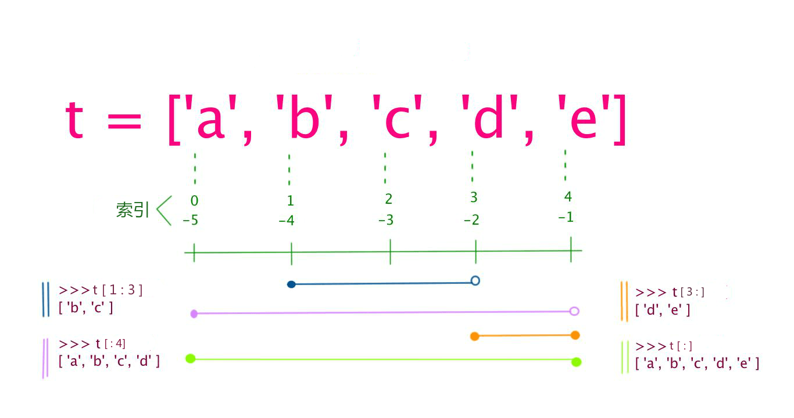

Tipos de datos básicos de Python3
Las variables en Python no requieren declaración. Cada variable debe tener un valor asignado antes de usarse; la variable se crea una vez que se le asigna un valor.
En Python, una variable es simplemente una variable; no tiene tipo. Lo que llamamostipoes el tipo del objeto en memoria al que se refiere la variable.
El signo igual=se utiliza para asignar valores a las variables. A la izquierda del signo igual está el nombre de la variable, y a la derecha está el valor almacenado en la variable. Por ejemplo:
Ejemplo (Python 3.0+)
counter = 100 # Variable entera
miles = 1000.0 # Variable de punto flotante
name = "runoob" # Cadena de caracteres
print(counter)
print(miles)
print(name)
Ejecutar ejemplo »
La ejecución del programa anterior produce el siguiente resultado:
100 1000.0 runoob
Asignación de múltiples variables
Python te permite asignar valores a múltiples variables al mismo tiempo. Por ejemplo:
a = b = c = 1
El ejemplo anterior crea un objeto entero con valor 1, y las tres variables reciben el mismo valor numérico.
También puedes asignar valores diferentes a varias variables al mismo tiempo. Por ejemplo:
a, b, c = 1, 2, "runoob"
En el ejemplo anterior, los objetos enteros 1 y 2 se asignan a las variables a y b respectivamente, y el objeto de cadena "runoob" se asigna a la variable c.
Se puede usartype()la función para ver el tipo de variable:
Ejemplo
x = 10 # Entero
y = 3.14 # Número de punto flotante
name = "Alice" # Cadena de caracteres
is_active = True # Valor booleano
# Asignación múltiple
a, b, c = 1, 2, "three"
# Ver el tipo de dato
print(type(x)) # <class 'int'>
print(type(y)) # <class 'float'>
print(type(name)) # <class 'str'>
print(type(is_active)) # <class 'bool'>
Tipos de datos estándar
En Python3 hay 6 tipos de datos estándar, además del tipo booleano bool (bool es una subclase de int, a veces se lista por separado):
- Number (Número)
- String (Cadena)
- bool (Tipo booleano)
- List (Lista)
- Tuple (Tupla)
- Set (Conjunto)
- Dictionary (Diccionario)
Según si son mutables, se pueden dividir en dos categorías:
- Datos inmutables (4):Number (Número), String (Cadena), bool (Booleano), Tuple (Tupla)
- Datos mutables (3):List (Lista), Dictionary (Diccionario), Set (Conjunto)
Además, hay algunos tipos de datos avanzados, como el tipo de matriz de bytes bytes.
Number (Número)
Python3 admiteint, float, bool, complex (números complejos)。
En Python 3 solo existe un tipo entero, int, que se representa como entero largo; no existe Long como en Python 2.
La función integradatype()se puede usar para consultar el tipo de objeto al que apunta la variable.
>>> a, b, c, d = 20, 5.5, True, 4+3j >>> print(type(a), type(b), type(c), type(d)) <class 'int'> <class 'float'> <class 'bool'> <class 'complex'>
Además, también se puede usarisinstance()para determinar:
Ejemplo
>>> isinstance(a, int)
True
isinstance 和 typeLa diferencia es:
type()no considera que una subclase sea un tipo de la clase padre.isinstance()considera que una subclase es un tipo de la clase padre.
>>> class A: ... pass ... >>> class B(A): ... pass ... >>> isinstance(A(), A) True >>> type(A()) == A True >>> isinstance(B(), A) True >>> type(B()) == A False
Nota:En Python3, bool es una subclase de int, y True y False se pueden sumar a números,True==1、False==0devolveráTrue, pero se puede usarispara determinar la identidad del objeto.
>>> issubclass(bool, int) True >>> True == 1 True >>> False == 0 True >>> True + 1 2 >>> False + 1 1 >>> 1 is True <stdin>:1: SyntaxWarning: "is" with 'int' literal. Did you mean "=="? False >>> 0 is False <stdin>:1: SyntaxWarning: "is" with 'int' literal. Did you mean "=="? False¿Por qué aparece SyntaxWarning?
Python detecta que estás usando
ispara comparar un entero literal (como 1) con True, lo que suele ser un error de código, porqueisse compara la identidad de los objetos (si son el mismo objeto), no si los valores son iguales. Python recomienda usar==para comparar valores, a menos que realmente necesites comprobar si es el mismo objeto.En Python 2 no existe el tipo booleano; se usa el número 0 para False y 1 para True.
Cuando especificas un valor, se crea un objeto Number:
var1 = 1 var2 = 10
la sentencia para eliminar la referencia al objeto:delPor ejemplo:
del var1[, var2[, var3[...., varN]]]
Operaciones numéricas
del var del var_a, var_b
Operaciones numéricas
Ejemplo
9
>>> 4.3 - 2 # Multiplicación
2.3
>>> 3 * 7 # División, obtiene un número de punto flotante
21
>>> 2 / 4 # División entera, obtiene un entero
0.5
>>> 2 // 4 # Módulo
0
>>> 17 % 3 # Potencia
2
>>> 2 ** 5 Nota:
32
Python puede asignar valores a múltiples variables a la vez, como
- Una variable puede apuntar a objetos de diferentes tipos mediante la asignación.
a, b = 1, 2。 - La división numérica incluye dos operadores:
- devuelve un número de punto flotante,/devuelve un entero (redondeado hacia abajo).//En cálculos mixtos, Python convierte automáticamente los enteros a números de punto flotante.
- Ejemplos de tipos numéricos
Ejemplos de tipos numéricos
| int | float | complex |
|---|---|---|
| 10 | 0.0 | 3.14j |
| 100 | 15.20 | 45.j |
| -786 | -21.9 | 9.322e-36j |
| 0o17 | 32.3e+18 | .876j |
| -0o112 | -90. | -.6545+0J |
| -0x260 | -32.54e100 | 3e+26J |
| 0x69 | 70.2E-12 | 4.53e-7j |
), los números octales deben usar el prefijo
080prefijo (como0o), los hexadecimales usan el prefijo0o17prefijo (como0x), los binarios usan el prefijo0x69prefijo.0bPython también admite números complejos, que constan de una parte real y una parte imaginaria; se pueden representar con
oa + bjpara representarlos; la parte real del número complejocomplex(a, b)y la parte imaginariaason de tipo punto flotante.bString (Cadena)
String (Cadena)
o comillas dobles'y se usa la barra invertida"para escapar caracteres especiales.\La sintaxis para el corte de cadenas es la siguiente:
Los índices comienzan en 0, y -1 es la posición desde el final.
变量[头下标:尾下标]
El signo más

es el operador de concatenación de cadenas; el asterisco+indica la repetición de la cadena actual, y el número que lo acompaña es la cantidad de repeticiones. Ejemplo:*Ejemplo
Ejemplo
my_str = 'Runoob' # Imprime toda la cadena: Runoob
print(my_str) # Imprime desde el índice 0 hasta el penúltimo carácter (sin incluir el último): Runoo
print(my_str[0:-1]) # Imprime el primer carácter: R
print(my_str[0]) # Imprime los caracteres de los índices 2, 3, 4 (sin incluir el índice 5): noo
print(my_str[2:5]) # Imprime desde el índice 2 hasta el final: noob
print(my_str[2:]) # Imprime la cadena repetida dos veces: RunoobRunoob
print(my_str * 2) # Concatenación de cadenas: RunoobTEST
print(my_str + "TEST") La ejecución del programa anterior produce el siguiente resultado:
Python usa la barra invertida
Runoob Runoo R noo noob RunoobRunoob RunoobTEST
para escapar caracteres especiales. Si no quieres que la barra invertida haga escape, puedes añadir una\, que indica una cadena sin procesar:rEjemplo
Ejemplo
Ru
oob
>>> print(r'Ru\noob')
Ru\noob
o"""..."""para abarcar varias líneas.'''...'''Nota: Python no tiene un tipo de carácter separado; un carácter es una cadena de longitud 1.
Ejemplo
Ejemplo
>>> print(word[0], word[5])
P n
>>> print(word[-1], word[-6])
n P
producirá un error.word[0] = 'm'Nota:
注意：
- La barra invertida se puede usar para escapar, usando
rel prefijo puede evitar que la barra invertida se interprete como escape (cadena sin procesar). - Las cadenas se pueden
+operador para concatenar, y usando*operador para repetir. - Las cadenas en Python tienen dos formas de indexación: de izquierda a derecha comienzan en 0, de derecha a izquierda comienzan en -1.
- Las cadenas en Python no se pueden modificar; las cadenas son un tipo inmutable.
bool (Tipo booleano)
El tipo booleano es True o False. En Python, True y False son ambas palabras clave que representan valores booleanos.
El tipo booleano se puede usar para controlar el flujo del programa, por ejemplo, para determinar si una condición se cumple, o para ejecutar un bloque de código cuando se cumple una condición.
Características del tipo booleano:
- El tipo booleano solo tiene dos valores: True y False.
- bool es una subclase de int, por lo que los valores booleanos pueden usarse como enteros, donde True equivale a 1 y False equivale a 0.
- El tipo booleano puede compararse con otros tipos de datos, como números, cadenas, etc. Al comparar, Python trata True como 1 y False como 0.
- El tipo booleano se puede usar con operadores lógicos, incluyendo
and、or和not, para combinar múltiples expresiones booleanas. - El tipo booleano también puede convertirse a otros tipos de datos, como enteros, números de punto flotante y cadenas. Al convertir, True se convierte en 1 y False se convierte en 0.
- Se puede usar la
bool()función para convertir valores de otros tipos a booleanos. Los siguientes valores se convierten en booleanos comoFalse：None、False, cero (0、0.0、0j), secuencias vacías (como''、()、[]) y mapeos vacíos (como{}). Todos los demás valores se convierten en booleanos comoTrue。
Ejemplo
a = True
b = False
print(type(a)) # <class 'bool'>
print(type(b)) # <class 'bool'>
# Comportamiento entero del tipo booleano
print(int(True)) # 1
print(int(False)) # 0
# Usar la función bool() para la conversión
print(bool(0)) # False
print(bool(42)) # True
print(bool('')) # False
print(bool('Python')) # True
print(bool([])) # False
print(bool([1, 2, 3])) # True
# Operaciones lógicas booleanas
print(True and False) # False
print(True or False) # True
print(not True) # False
# Operaciones de comparación booleanas
print(5 > 3) # True
print(2 == 2) # True
print(7 < 4) # False
# Aplicación de valores booleanos en el flujo de control
if True:
print("This will always print")
if not False:
print("This will also always print")
x = 10
if x:
print("x es un valor distinto de cero, en contexto booleano es True")
Nota:En Python, todos los números distintos de cero y los tipos de datos como cadenas, listas, tuplas, etc., no vacíos se consideran True, solo0, cadena vacía, lista vacía, tupla vacíaetc. se consideran False. Por lo tanto, al realizar conversiones de tipo booleano, se debe prestar atención a la veracidad o falsedad del tipo de dato.
List (Lista)
List (lista) es el tipo de dato más utilizado en Python.
La lista puede implementar la mayoría de las estructuras de datos de tipo colección. Los tipos de los elementos de una lista pueden ser diferentes; admite números, cadenas e incluso puede contener listas (es decir, listas anidadas).
Las listas se escriben entre corchetes[]entre ellos, una lista de elementos separados por comas.
Al igual que las cadenas, las listas también se pueden indexar y segmentar; después de segmentar una lista, se devuelve una nueva lista que contiene los elementos deseados.
El formato de sintaxis para segmentar listas es el siguiente:
变量[头下标:尾下标]
Los valores de índice comienzan en0como valor inicial,-1y como posición inicial desde el final.

El signo más+es el operador de concatenación de listas; el asterisco*es el operador de repetición. Como en el siguiente ejemplo:
Ejemplo
my_list = ['abcd', 786, 2.23, 'runoob', 70.2] # Evita usar list como nombre de variable; sobrescribiría el tipo integrado
tinylist = [123, 'runoob']
print(my_list) # Imprime toda la lista: ['abcd', 786, 2.23, 'runoob', 70.2]
print(my_list[0]) # Imprime el primer elemento (índice 0): abcd
print(my_list[1:3]) # Imprime los elementos de los índices 1 y 2 (sin incluir el índice 3): [786, 2.23]
print(my_list[2:]) # Imprime todos los elementos desde el índice 2 hasta el final: [2.23, 'runoob', 70.2]
print(tinylist * 2) # Imprime tinylist repetida dos veces: [123, 'runoob', 123, 'runoob']
print(my_list + tinylist) # Concatena dos listas
La salida del ejemplo anterior es:
['abcd', 786, 2.23, 'runoob', 70.2] abcd [786, 2.23] [2.23, 'runoob', 70.2] [123, 'runoob', 123, 'runoob'] ['abcd', 786, 2.23, 'runoob', 70.2, 123, 'runoob']
A diferencia de las cadenas de Python, los elementos de una lista se pueden modificar:
Ejemplo
>>> a[0] = 9
>>> a[2:5] = [13, 14, 15]
>>> a
[9, 2, 13, 14, 15, 6]
>>> a[2:5] = [] # Establece el valor de los elementos correspondientes como lista vacía, es decir, elimina esos elementos
>>> a
[9, 2, 6]
List tiene muchos métodos integrados, por ejemploappend()、pop(), etc. Esto se explicará más adelante.
Nota:
- Las listas se escriben entre corchetes, con los elementos separados por comas.
- Al igual que las cadenas, las listas se pueden indexar y dividir en segmentos.
- Las listas se pueden concatenar usando el+operador.
- Los elementos de una lista se pueden modificar (tipo mutable).
La segmentación de listas en Python puede recibir un tercer parámetro, cuya función es el paso de la segmentación. El siguiente ejemplo segmenta la lista desde el índice 1 hasta el índice 4 con un paso de 2 (tomando un elemento cada dos posiciones):

Si el tercer parámetro es negativo, indica lectura en orden inverso. El siguiente ejemplo se usa para invertir el orden de las palabras en una cadena:
Ejemplo
# Divide la cadena por espacios, separando cada palabra en una lista
inputWords = input.split(" ")
# Explicación de los tres parámetros de inputWords[-1::-1]:
# El primer parámetro -1 indica comenzar desde el último elemento
# El segundo parámetro está vacío, indica moverse hasta el inicio de la lista
# El tercer parámetro -1 indica paso inverso (mover una posición a la izquierda cada vez)
inputWords = inputWords[-1::-1]
# Vuelve a unir las palabras con espacios
output = ' '.join(inputWords)
return output
if __name__ == "__main__":
input = 'I like runoob'
rw = reverseWords(input)
print(rw)
El resultado de salida es:
runoob like I
Tuple (Tupla)
La tupla (tuple) es similar a la lista, con la diferencia de que los elementos de una tupla no se pueden modificar. Las tuplas se escriben entre paréntesis()y los elementos se separan con comas.
Los tipos de los elementos de una tupla también pueden ser diferentes:
Ejemplo
my_tuple = ('abcd', 786, 2.23, 'runoob', 70.2) # Evita usar tuple como nombre de variable
tinytuple = (123, 'runoob')
print(my_tuple) # Imprime la tupla completa
print(my_tuple[0]) # Imprime el primer elemento: abcd
print(my_tuple[1:3]) # Imprime los elementos de los índices 1 y 2: (786, 2.23)
print(my_tuple[2:]) # Imprime todos los elementos desde el índice 2
print(tinytuple * 2) # Imprime tinytuple dos veces
print(my_tuple + tinytuple) # Concatena dos tuplas
La salida del ejemplo anterior es:
('abcd', 786, 2.23, 'runoob', 70.2)
abcd
(786, 2.23)
(2.23, 'runoob', 70.2)
(123, 'runoob', 123, 'runoob')
('abcd', 786, 2.23, 'runoob', 70.2, 123, 'runoob')
Las tuplas son similares a las cadenas; se pueden indexar, los subíndices comienzan en 0, -1 es la posición desde el final, y también se pueden segmentar.
De hecho, se puede considerar una cadena como un tipo especial de tupla.
Ejemplo
>>> print(tup[0])
1
>>> print(tup[1:5])
(2, 3, 4, 5)
>>> tup[0] = 11 # Modificar elementos de una tupla es una operación ilegal
Traceback (most recent call last):
File "<stdin>", line 1, in <module>
TypeError: 'tuple' object does not support item assignment
Aunque los elementos de una tupla no se pueden modificar, puede contener objetos mutables, como listas.
Construir tuplas con 0 o 1 elementos es especial y tiene algunas reglas de sintaxis adicionales:
tup1 = () # 空元组 tup2 = (20,) # 一个元素，需要在元素后添加逗号
Si quieres crear una tupla con un solo elemento, debes añadir una coma después del elemento para distinguirla de un valor ordinario. Sin la coma, Python interpreta los paréntesis como paréntesis de operaciones matemáticas:
not_a_tuple = (42) # 这是整数 42，不是元组
string、list 和 tupleTodos pertenecen a sequence (secuencia).
Nota:
- Al igual que las cadenas, los elementos de una tupla no se pueden modificar (tipo inmutable).
- Las tuplas también se pueden indexar y segmentar, de la misma manera que las listas.
- Presta atención a las reglas especiales de sintaxis para construir tuplas con 0 o 1 elementos.
- Las tuplas también se pueden concatenar usando el+operador.
Set (Conjunto)
Un conjunto (Set) en Python es un tipo de dato desordenado y mutable que se utiliza para almacenar elementos únicos. Los elementos de un conjunto no se repiten, y se pueden realizar operaciones comunes de conjuntos como intersección, unión y diferencia.
En Python, los conjuntos se representan con llaves{}y los elementos se separan con comas,. También se puede usar laset()función para crear conjuntos.
Nota:Para crear un conjunto vacío se debe usarset()en lugar de{}, porque{}crea un diccionario vacío.
Formato de creación:
parame = {value01, value02, ...}
或者
set(value)
Ejemplo
sites = {'Google', 'Taobao', 'Runoob', 'Facebook', 'Zhihu', 'Baidu'}
print(sites) # Imprime el conjunto (desordenado, los elementos duplicados se eliminan automáticamente)
# Prueba de membresía
if 'Runoob' in sites:
print('Runoob está en el conjunto')
else:
print('Runoob no está en el conjunto')
# set puede realizar operaciones de conjuntos
a = set('abracadabra')
b = set('alacazam')
print(a) # Caracteres únicos en a
print(a - b) # Diferencia de a y b (en a pero no en b)
print(a | b) # Unión de a y b (en a o en b)
print(a & b) # Intersección de a y b (en a y en b al mismo tiempo)
print(a ^ b) # Diferencia simétrica de a y b (en a o en b, pero no en ambos)
La salida del ejemplo anterior es:
{'Zhihu', 'Baidu', 'Taobao', 'Runoob', 'Google', 'Facebook'}
Runoob 在集合中
{'b', 'c', 'a', 'r', 'd'}
{'r', 'b', 'd'}
{'b', 'c', 'a', 'z', 'm', 'r', 'l', 'd'}
{'c', 'a'}
{'z', 'b', 'm', 'r', 'l', 'd'}
Dictionary (Diccionario)
El diccionario (dictionary) es otro tipo de dato integrado muy útil en Python.
El diccionario es un tipo de mapeo, que se identifica con{}para identificarlo; es unClave (key): valor (value)de pares. La clave (key) debe ser de un tipo inmutable, y en el mismo diccionario las claves deben ser únicas.
Nota:A partir de Python 3.7, los diccionarios mantienen elorden de inserción, ya no son desordenados. Si necesitas las características de un diccionario ordenado, usa directamente un diccionario normal
dictbasta.
Ejemplo
my_dict = {}
my_dict['one'] = 1 - 菜鸟教程
my_dict[2] = 2 - 菜鸟工具
tinydict = {'name': 'runoob', 'code': 1, 'site': 'www.runoob.com'}
print(my_dict['one']) # Imprime el valor de la clave 'one'
print(my_dict[2]) # Imprime el valor de la clave 2
print(tinydict) # Imprime el diccionario completo
print(tinydict.keys()) # Imprime todas las claves
print(tinydict.values()) # Imprime todos los valores
El resultado del ejemplo anterior es:
1 - 菜鸟教程
2 - 菜鸟工具
{'name': 'runoob', 'code': 1, 'site': 'www.runoob.com'}
dict_keys(['name', 'code', 'site'])
dict_values(['runoob', 1, 'www.runoob.com'])
Constructordict()Se puede construir un diccionario directamente a partir de una secuencia de pares clave-valor:
Ejemplo
{'Runoob': 1, 'Google': 2, 'Taobao': 3}
>>> {x: x**2 for x in (2, 4, 6)}
{2: 4, 4: 16, 6: 36}
>>> dict(Runoob=1, Google=2, Taobao=3)
{'Runoob': 1, 'Google': 2, 'Taobao': 3}
{x: x**2 for x in (2, 4, 6)}Se usa una comprensión de diccionario. Para más contenido sobre comprensiones, consulta:Comprensiones en Python。
Además, el tipo diccionario también tiene algunas funciones integradas, por ejemploclear()、keys()、values()etc.
Nota:
- Un diccionario es un tipo de mapeo, cuyos elementos son pares clave-valor.
- Las claves de un diccionario deben ser de un tipo inmutable y no pueden repetirse.
- Para crear un diccionario vacío, usa{}。
- A partir de Python 3.7, los diccionarios mantienen el orden de inserción.
Tipo bytes
En Python 3, el tipo bytes representa una secuencia binaria inmutable (byte sequence). A diferencia del tipo cadena, los elementos del tipo bytes son valores enteros (enteros entre 0 y 255), no caracteres Unicode.
El tipo bytes se usa generalmente para manejar datos binarios, como archivos de imagen, archivos de audio, archivos de video, etc. En programación de redes, también se usa frecuentemente el tipo bytes para transmitir datos binarios.
La forma más común de crear un objeto bytes es usando elbprefijo:
Ejemplo
print(x) # b'hello'
print(type(x)) # <class 'bytes'>
print(x[0]) # 104 (valor ASCII de 'h'; los elementos de bytes son enteros)
También se puede usar la funciónbytes()para convertir objetos de otros tipos al tipo bytes; el segundo parámetro especifica la codificación:
x = bytes("hello", encoding="utf-8")
Similar al tipo cadena, el tipo bytes también admite operaciones como rebanado (slice), concatenación, búsqueda, reemplazo, etc. Debido a que el tipo bytes es inmutable, las operaciones de modificación requieren crear un nuevo objeto bytes:
Ejemplo
y = x[1:3] # Operación de rebanado, se obtiene b'el'
z = x + b"world" # Operación de concatenación, se obtiene b'helloworld'
print(y) # b'el'
print(z) # b'helloworld'
Es importante tener en cuenta que los elementos del tipo bytes son valores enteros, por lo tanto, al realizar operaciones de comparación se necesitan usar los valores enteros correspondientes. Se puede usarord()la función para convertir un carácter a su valor entero correspondiente:
Ejemplo
if x[0] == ord("h"): # ord("h") devuelve 104
print("El primer elemento es 'h'")
Conversión de tipos de datos en Python
A veces necesitamos convertir los tipos integrados de datos; simplemente usamos el tipo de dato como nombre de función. En el siguiente capítuloConversión de tipos de datos en Python3se explicará en detalle.
Las siguientes funciones integradas pueden realizar conversiones entre tipos de datos; estas funciones devuelven un nuevo objeto que representa el valor convertido:
| Función | Descripción |
|---|---|
Convierte x a un entero |
|
Convierte x a un número de coma flotante |
|
Crea un número complejo |
|
Convierte el objeto x a una cadena |
|
Convierte el objeto x a una cadena de expresión |
|
Evalúa una expresión Python válida en la cadena y devuelve un objeto |
|
Convierte la secuencia s a una tupla |
|
Convierte la secuencia s a una lista |
|
Convierte a un conjunto mutable |
|
Crea un diccionario. d debe ser una secuencia de tuplas (key, value). |
|
Convierte a un conjunto inmutable |
|
Convierte un entero a su carácter correspondiente |
|
Convierte un carácter a su valor entero (punto de código Unicode) |
|
Convierte un entero a una cadena hexadecimal |
|
Convierte un entero a una cadena octal |
荆棘乱
llc***n@gmail.com
Tupla (pequeña ampliación)
En general, el valor de retorno de una función suele ser uno solo.
Y cuando una función devuelve varios valores, los devuelve en forma de tupla.
Ejemplo (en la línea de comandos):
Las funciones en Python también pueden recibir parámetros de longitud variable; por ejemplo, un nombre de parámetro que comienza con "*" recoge todos los parámetros en una tupla.
Por ejemplo:
def test(*args): print(args) return args print(type(test(1,2,3,4))) #可以看见其函数的返回值是一个元组Diccionario (pequeña ampliación)
Los diccionarios en Python utilizan un algoritmo llamado tabla hash (hashtable) (no voy a entrar en detalles),
Su característica es que, sin importar cuántos elementos tenga el diccionario, el operador `in` tarda aproximadamente el mismo tiempo.
Si se usa un objeto diccionario como objeto de iteración de un bucle `for`, esta operación recorrerá las claves del diccionario:
def example(d): # d 是一个字典对象 for c in d: print(c) #如果调用函数试试的话，会发现函数会将d的所有键打印出来; #也就是遍历的是d的键，而不是值.荆棘乱
llc***n@gmail.com
我去咬你啦
815***114@qq.com
En respuesta a la ampliación sobre diccionarios de arriba, al hacer pruebas, quería generar la combinación kye:value y descubrí que se puede hacer así:
for c in dict: print(c,':',dict[c])o
for c in dict: print(c,end=':'); print(dict[c])Entonces descubrí que la función print() en realidad puede aceptar múltiples parámetros separados por comas.
Originalmente quería usar
for c in dict: print(c+':'); print(dict[c])de esta manera para imprimir key:value, resultó que la clave no siempre es de tipo string, por lo que usar el signo + causará problemas.
我去咬你啦
815***114@qq.com
愤怒的胸毛毛
zha***aijun2013@foxmail.com
En el uso de listas, un punto que es fácil pasar por alto al principio es:
list[1:3] en realidad solo genera dos elementos, es decir, del segundo elemento al tercero en la lista, no los elementos 1, 2 y 3; y hay que tener en cuenta que
El contenido impreso por estas dos frases es en realidad el mismo,
pero la segunda frase tiene corchetes.
------------------------------------------------------
Lo siguiente es eltemmple_wang@qq.comcomplemento de un usuario de internet:
En realidad creo que se puede entender así:
En realidad podemos probarlo:
En realidad, el valor dentro de los corchetes también puede ser negativo:
----------------------------
Anexo sobre listas:
El contenido impreso por estas dos frases es en realidad el mismo:
Pero ten en cuenta que son tipos diferentes; usa una variable para recibirlo:
愤怒的胸毛毛
zha***aijun2013@foxmail.com
hellowqp
wqp***a@foxmail.com
Una diferencia entre Python y los lenguajes C y Java es que sus variables no necesitan declarar un tipo de variable. Esto se debe a que, a diferencia de lenguajes como C y Java, que son estáticos, Python es dinámico; el tipo de la variable lo determina el valor que se le asigna. Por ejemplo:
La primera vez se asigna a la variable `a` un valor entero, la segunda vez un número de coma flotante, la tercera una cadena, y al final, al imprimir, solo se conserva la última asignación.
hellowqp
wqp***a@foxmail.com
燕春
zqs***306010@qq.com
Dirección de referencia
`type` se usa para obtener el tipo de datos de un objeto desconocido, mientras que `isinstance` se usa para determinar si un objeto es de un tipo conocido.
`type` no considera que una subclase sea un tipo de la clase padre, mientras que `isinstance` sí considera que una subclase es un tipo de la clase padre.
Se puede usar `isinstance` para determinar si un objeto de subclase hereda de la clase padre; `type` no puede.
En resumen, aunque `type` e `isinstance` están relacionados con los tipos de datos, en realidad su uso es diferente. `type` se utiliza principalmente para determinar tipos de datos desconocidos, mientras que `isinstance` se utiliza principalmente para determinar si la clase A hereda de la clase B:
# 判断子类对象是否继承于父类 class father(object): pass class son(father): pass if __name__ == '__main__': print (type(son())==father) print (isinstance(son(),father)) print (type(son())) print (type(son))Resultado de la ejecución:
燕春
zqs***306010@qq.com
Dirección de referencia
妞妞
704***556@qq.com
Diccionarios (un pequeño extra)
Para ingresar pares clave-valor en `dict`, puede usar directamenteitems()función:
dict1 = {'abc':1,"cde":2,"d":4,"c":567,"d":"key1"} for k,v in dict1.items(): print(k,":",v)妞妞
704***556@qq.com
hjc132
huj***heng132@gmail.com
Diccionarios (un pequeño extra)
El texto original dice que `dict(d)` crea un diccionario. `d` debe ser una secuencia de tuplas `(key, value)`.
En realidad `d` no tiene que ser necesariamente una secuencia de tuplas, como se muestra a continuación:
>>> dict_1 = dict([('a',1),('b',2),('c',3)]) #元素为元组的列表 >>> dict_1 {'a': 1, 'b': 2, 'c': 3} >>> dict_2 = dict({('a',1),('b',2),('c',3)})#元素为元组的集合 >>> dict_2 {'b': 2, 'c': 3, 'a': 1} >>> dict_3 = dict([['a',1],['b',2],['c',3]])#元素为列表的列表 >>> dict_3 {'a': 1, 'b': 2, 'c': 3} >>> dict_4 = dict((('a',1),('b',2),('c',3)))#元素为元组的元组 >>> dict_4 {'a': 1, 'b': 2, 'c': 3}hjc132
huj***heng132@gmail.com
Estudia mucho y progresa cada día.
522***154@qq.com
Conjuntos y diccionarios
Desordenado:Los conjuntos son desordenados, por lo que no admiten indexación; los diccionarios también son desordenados, pero como sus elementos son pares clave-valor compuestos por dos atributos: clave (key) y valor (value), se pueden indexar mediante la clave (key).
Unicidad de los elementos:Los conjuntos son secuencias sin elementos repetidos y eliminan automáticamente los duplicados; los diccionarios, debido a la unicidad de su clave, tampoco contienen elementos duplicados.
Estudia mucho y progresa cada día.
522***154@qq.com
Lonapse
270***302@qq.com
Dirección de referencia
#coding=utf8 ''''' 复数是由一个实数和一个虚数组合构成，表示为：x+yj 一个负数时一对有序浮点数(x,y)，其中x是实数部分，y是虚数部分。 Python语言中有关负数的概念： 1、虚数不能单独存在，它们总是和一个值为0.0的实数部分一起构成一个复数 2、复数由实数部分和虚数部分构成 3、表示虚数的语法：real+imagej 4、实数部分和虚数部分都是浮点数 5、虚数部分必须有后缀j或J 复数的内建属性： 复数对象拥有数据属性，分别为该复数的实部和虚部。 复数还拥有conjugate方法，调用它可以返回该复数的共轭复数对象。 复数属性：real(复数的实部)、imag(复数的虚部)、conjugate()（返回复数的共轭复数） ''' class Complex(object): '''''创建一个静态属性用来记录类版本号''' version=1.0 '''''创建个复数类，用于操作和初始化复数''' def __init__(self,rel=15,img=15j): self.realPart=rel self.imagPart=img #创建复数 def creatComplex(self): return self.realPart+self.imagPart #获取输入数字部分的虚部 def getImg(self): #把虚部转换成字符串 img=str(self.imagPart) #对字符串进行切片操作获取数字部分 img=img[:-1] return float(img) def test(): print "run test..........." com=Complex() Cplex= com.creatComplex() if Cplex.imag==com.getImg(): print com.getImg() else: pass if Cplex.real==com.realPart: print com.realPart else: pass #原复数 print "the religion complex is :",Cplex #求取共轭复数 print "the conjugate complex is :",Cplex.conjugate() if __name__=="__main__": test()Lonapse
270***302@qq.com
Dirección de referencia
Símbolo
974***897@QQ.com
El corte también puede establecer un paso.
Símbolo
974***897@QQ.com
El hermano menor de Wang Er
182***56065@163.com
Dirección de referencia
Tipo bool
En Python, los valores booleanos usan constantesTrue 和 Falsepara representarse.
1. En contexto numérico,Truese considera1，Falsese considera0, por ejemplo:
2. Conversión de valores de otros tiposboolal valor, excepto''、""、''''''、""""""、0、()、[]、{}、None、0.0、0L、0.0+0.0j、False 为 Falseexcepto eso, todos los demás sonTruepor ejemplo:
>>> bool(-2) True >>> bool('') FalseEl hermano menor de Wang Er
182***56065@163.com
Dirección de referencia
Jianzi
136***9943@qq.com
Corresponde aal primer comentario, cuando una función tiene múltiples parámetros, no necesariamente devuelve en forma de tupla; depende de la forma de retorno que uno defina:
Jianzi
136***9943@qq.com
went000
751***610@qq.com
En respuesta al comentario anterior que presentó una opinión diferente al primer comentario, pero el primer comentario en realidad hablaba de cuando hay múltiples valores de retorno, no de cuando hay múltiples parámetros como dijo el comentario anterior.
En el ejemplo anterior, en realidad solo hay un valor de retorno, un argumento de tipo List.
Lo que el primer comentario decía sobre múltiples valores de retorno es:
went000
751***610@qq.com
flaray
144***3921@qq.com
Pequeño dato sobre el tipo Bool:
Python3 eliminó el tipo long, y separó el 0 y el 1 para formar el tipo Bool que determina verdadero o falso, es decir, 0 y 1 se pueden usar para determinar false y true. Pero en esencia no modificó el principio. Aquí el tipo Bool sigue siendo parte del tipo int, por lo que aún puede participar en operaciones como número; por lo tanto, el tipo Bool en Python3 es un caso especial del tipo int, no un tipo independiente.
flaray
144***3921@qq.com
甄能忽悠呀
813***866@qq.com
Nota: las listas, las tuplas y los conjuntos tienen diferencias (los novatos suelen caer fácilmente en la trampa).
Las listas y las tuplas no combinan valores iguales, pero los conjuntos sí combinan los iguales.
>>> clist = ['tom','tom','jerry'] #测试列表功能 >>> print (clist） ['tom','tom','jerry'] >>>ctuple = ('tom','tom','jerry') #测试元组功能 >>>print(ctuple) ('tom','tom','jerry') >>>cset = {'tom','tom','jerry'} #测试集合功能 >>>print(cset) {'tom','jerry'}甄能忽悠呀
813***866@qq.com
dianmouren
yan***i4242@outlook.com
Complemento sobre los detalles de creación de listas:
>>> o = {1, 2, 3} >>> type(o) <class 'set'> >>> o = {} >>> type(o) <class 'dict'>dianmouren
yan***i4242@outlook.com
紫竹修韵
162***3732@qq.com
Dirección de referencia
Algunos casos sobre comprensión de diccionarios:
# 字典推导式 p = {i:str(i) for i in range(1,5)} print("p:",p) ''' p: {1: '1', 2: '2', 3: '3', 4: '4'} ''' x = ['A','B','C','D'] y = ['a','b','c','d'] n = {i:j for i,j in zip(x,y)} print("n:",n) ''' n: {'A': 'a', 'B': 'b', 'C': 'c', 'D': 'd'} ''' s = {x:x.strip() for x in ('he','she','I')} print("s:",s) ''' s: {'he': 'he', 'she': 'she', 'I': 'I'} '''紫竹修韵
162***3732@qq.com
Dirección de referencia
Creepercdn
cre***rcdn@outlook.com
Todos los tipos de datos son clases.
Es decir, tipos de datos como int, str no son funciones, solo son clases.
Usar int(), str(), list(), etc. es inicializar la clase correspondiente; por lo tanto, 123456, "Runoob", [1,2,3], etc. son los resultados de inicialización de los tipos de datos correspondientes.
Muchas personas y sitios web educativos creen que los tipos de datos como int, str, list son funciones, pero esto es incorrecto. El resultado de salida de type(int) demuestra que int es una clase.
Creepercdn
cre***rcdn@outlook.com
闫伟超
yif***chaoran@163.com
Aquí se amplía un poco la relación entre variables y objetos:
Por ejemplo, lo siguiente:
En este momento, a, en diferentes líneas de código de asignación, hace referencia a objetos de diferentes tipos, lo que equivale a cambiar continuamente el objeto al que a hace referencia. Al final, cuando se elimina la variable a, en esencia solo se elimina el nombre de la variable a; pero como el objeto [1,2,3] al que a hacía referencia, debido a que a fue eliminado, su número de referencias se convierte en 0, y automáticamente es recolectado por Python. El resultado final es que al hacer del a, [1,2,3] también se elimina.
Otro pequeño dato: para mejorar la eficiencia de ejecución del código y de asignación de memoria, Python crea de antemano algunos objetos de uso común y los mantiene permanentemente en memoria, por ejemplo:
id(4) #不管运行多少次该代码，其返回的值均不变，因为python会保持一些常用的数字常驻内存，不会每次都重新分配内存空间 id('hello world') #每次运行，返回的值均会发生变化，因为每次运行，相当于都在重新分配内存空间闫伟超
yif***chaoran@163.com
elliotalderson
274***2424@qq.com
El significado de type se puede entender como: verificar el tipo de la variable en sí, sin importar el tipo de su clase padre.
El significado de isinstance se puede entender como: determinar si el tipo de esta variable pertenece a una categoría mayor, como si se buscara en el árbol genealógico para determinar si eres parte de esa familia.
is se utiliza no solo para comparar si los valores son iguales, sino también para comparar si los tipos son iguales, y además si se compara o no el tipo de la clase padre.
elliotalderson
274***2424@qq.com
MING
110***7859@qq.com
Las listas son colecciones ordenadas de objetos; los diccionarios son colecciones desordenadas de objetos. La diferencia entre ambos es que los elementos de un diccionario se acceden por clave, no por desplazamiento.
Aquí, "clave" y "desplazamiento" se refieren a diferentes métodos o mecanismos para acceder a los elementos de una colección.
Desplazamiento (Indexación)：
my_list = [10, 20, 30, 40], para acceder al segundo elemento (20), se puede usar el índice de desplazamientomy_list[1]. Aquí,1es el desplazamiento, que indica la posición del elemento que se quiere acceder en la lista.Clave (Acceso basado en clave)：
my_dict = {'a': 10, 'b': 20, 'c': 30},'a'、'b'、'c'son las claves, que se usan para obtener el valor asociado. Por ejemplo, mediante la clave'b'se puede acceder al valor20。Resumen de diferencias：
Por lo tanto, los elementos de una lista se pueden acceder de manera ordenada por su posición (desplazamiento), mientras que los elementos de un diccionario se acceden por clave (no por posición), y no se garantiza que el orden de acceso coincida con el orden en que se agregaron los elementos.
MING
110***7859@qq.com